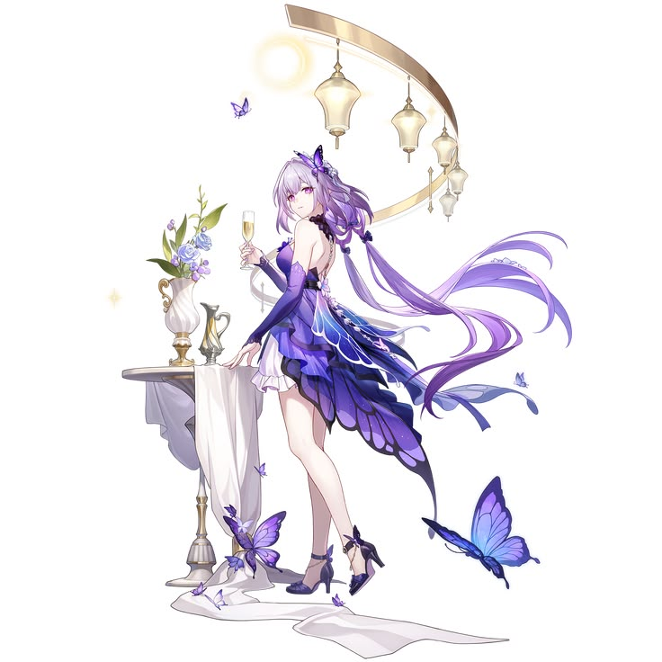

Castorice adalah gadis dari Aidonia di Amphoreus yang lahir dengan kutukan kematian. Makhluk hidup yang terlalu dekat atau menyentuhnya bisa mati, jadi sejak kecil dia hidup sendirian dan takut menyakiti orang lain.
Dia kemudian terikat dengan naga undead bernama Pollux, makhluk yang berhubungan dengan River of Souls dan kekuatan kematian. Awalnya Castorice mengira Pollux adalah sumber kutukannya, tapi akhirnya dia sadar mereka sama-sama korban takdir.
Sepanjang cerita Amphoreus, Castorice mencari kebenaran tentang kematian, jiwa, dan siklus dunia yang terus berulang. Setelah mengetahui rahasia True Reaper dan menerima Coreflame of Death, dia memilih menjadi penjaga arus jiwa di River of Souls.